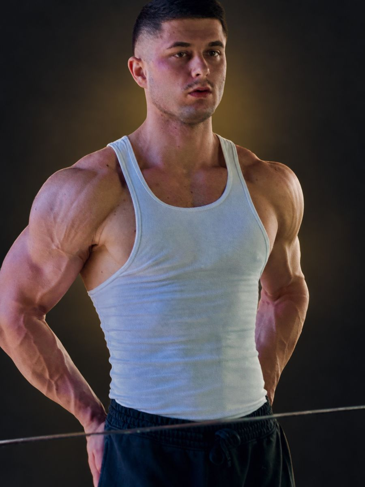

Tu veux passer un cap, sur des bases solides et durables. Prends 5 minutes pour parcourir ça : la méthode, le suivi, les preuves et la garantie. Comme ça, demain, on va direct à l'essentiel — ta situation et ton plan.

Ta stratégie commence avant tout produit : entraînement, nutrition, sommeil, récupération et bilans. Chaque décision s'appuie sur tes chiffres.
Ton historique, tes bilans, ton rythme de vie, tes contraintes. On fixe ensemble ton objectif chiffré et daté.
Entraînement, nutrition, repas et courses, supplémentation, récupération et sommeil, restaurant, voyages et imprévus.
Poids, mensurations, photos, charges, sommeil, énergie, ressentis et bilans sanguins. Tu fais ton bilan, je te réponds par écrit et j'ajuste.
La liste des marqueurs à faire, l'analyse écrite de chaque bilan et une liste prête à montrer à ton médecin.
Un bilan de parcours et un plan d'autonomie : tu repars avec tes résultats et tu sais les garder.
Du premier au dernier jour.
Réponse en général dans la journée.
Lancement, bilans sanguins, changement de phase, blocage. Le reste se règle par écrit, à ton rythme.
Depuis ton téléphone. Mon retour est publié sur ta page.
Chiffres clés, feuille de route, « Cette semaine », documents en vigueur, tracker.
Ils bougent avec tes résultats : à chaque bilan, chaque visio, chaque étape.
Ton journal, tes mesures et tes graphiques, en 30 secondes par jour.
La version en vigueur, consultable à tout moment.
Une réponse pour chaque situation, dont la méthode pour ajuster seul tes calories et ton entraînement.
Près de 200 fiches : bénéfices, risques, suivi à faire.
À ton espace et à toutes les ressources, même après l'accompagnement.
10 % en virement + 10 % en crédit d'accompagnement pour chaque proche qui signe.
J'en ai vraiment pour mon argent. Ils m'ont pas vendu du rêve. C'était tellement bien organisé, tellement bien structuré.
Un bien-être comme j'avais rarement connu. Une fatigue qui a disparu. Et une force doublée.
J'ai quand même pas mal séché. J'ai gardé de la masse musculaire et perdu pas mal de gras.
Témoignage vidéo à venir
TanguyPolicier de nuit70,0 → 77,7 kgen 7 semainesDepuis le début de l'accompagnement, j'en ai aucune, mais vraiment aucune [douleur]. Physiquement, je me sens vraiment bien et fort.
On fixe ensemble ton objectif chiffré au départ.
S'il n'est pas atteint à la fin de ton accompagnement, je continue à t'accompagner sans surcoût jusqu'à ce qu'il le soit.
Modalités dans ton contrat : bilans de la semaine envoyés, plan appliqué, bilans sanguins faits.
Dès ton inscription, tu reçois ton espace personnel PG Protocol. Il se remplit au fil de l'accompagnement et se met à jour après chaque bilan.
Entraînement calé sur ton planning, nutrition, repas et courses, récupération et sommeil, protocole toujours à jour.
Poids, mensurations, photos, charges, sommeil, énergie : tes graphiques se dessinent tout seuls, semaine après semaine.
Mon retour écrit sur chaque bilan, plus de 40 fiches pratiques et près de 200 fiches « Molécules décodées ».
Exemple réel avec un profil fictif (Thomas). Ton espace à toi est privé : toi seul y as accès.
Aujourd'hui, personne ne sait encore de quoi tu auras besoin : ça dépend de ton bilan sanguin, de ton objectif et de la stratégie qu'on va construire. Calculer un budget avant, c'est calculer à l'aveugle. On le fait ensemble à ta visio de lancement, sur des bases réelles.
Je ne vends rien et je ne recommande aucun vendeur. Personne ne peut garantir le contenu d'un flacon sans analyse. Mon rôle : ta stratégie, la lecture de tes bilans et ton suivi.
C'est exactement par là qu'on commence. Ta stratégie part de tes vrais chiffres.
Nulle part. Le cadre est fait pour le réduire au maximum : on part de tes bilans, on démarre progressivement et on contrôle chaque étape. C'est tout l'intérêt d'être accompagné plutôt que de faire seul.
Compte environ 45 min. On fait le point sur ta situation et ton objectif, et je te montre très concrètement comment on travaillerait ensemble. Viens avec tes questions.
Rejoindre la visio → meet.google.com/dba-artw-cejGarde ce lien pour demain. Un imprévu ? Préviens-moi sur WhatsApp.